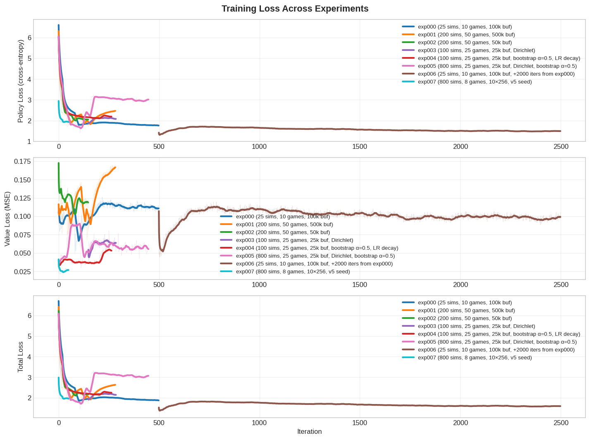
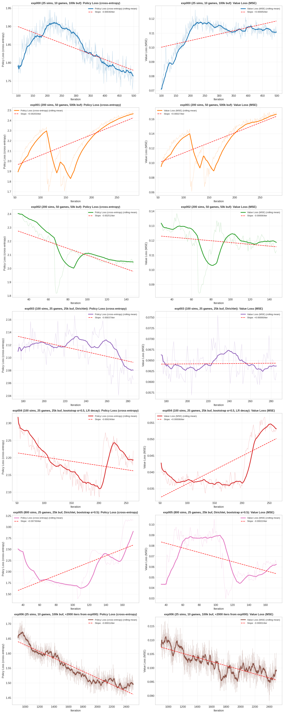
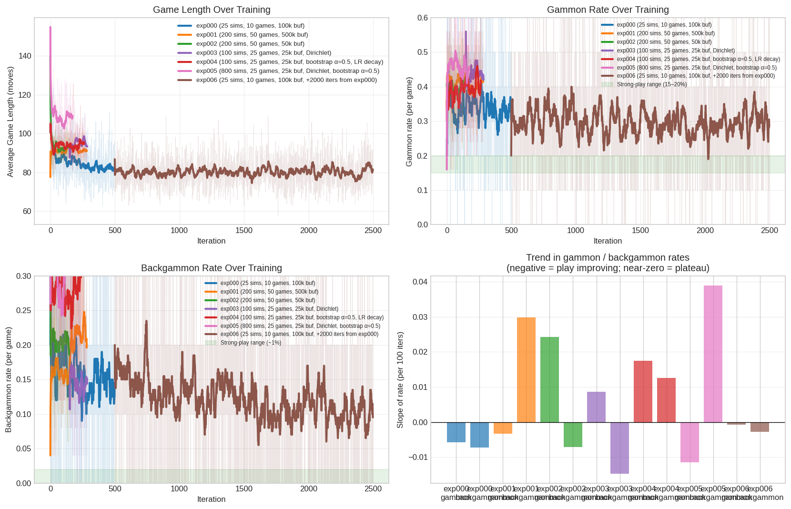
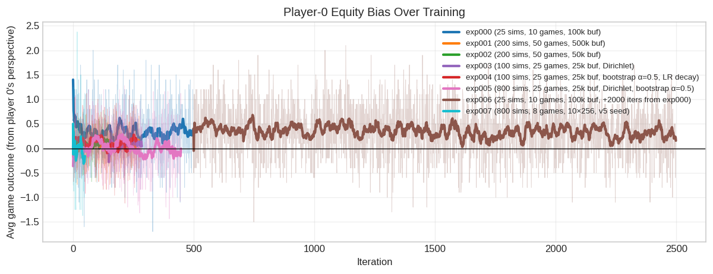
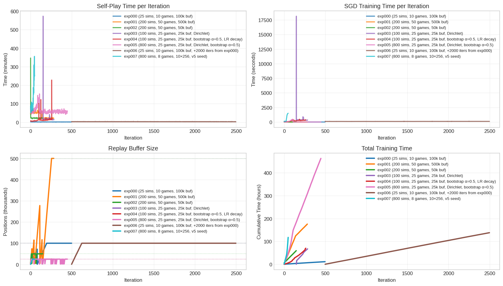

| Experiment | Network | MCTS Sims | Games/Iter | Iterations | Total Games | Status |
|:-------------------------------|:--------------|------------:|-------------:|-------------:|--------------:|:---------|
| exp000-6x128-25sims | 6×128 ResNet | 25 | 10 | 499 | 4990 | Complete |
| exp001-6x128-200sims | 6×128 ResNet | 200 | 50 | 283 | 14150 | Complete |
| exp002-6x128-200sims-50kbuf | 6×128 ResNet | 200 | 50 | 148 | 7400 | Complete |
| exp003-6x128-100sims-dirichlet | 6×128 ResNet | 100 | 25 | 138 | 3450 | Complete |
| exp004-6x128-100sims-bootstrap | 6×128 ResNet | 100 | 25 | 264 | 6600 | Complete |
| exp005-6x128-800sims | 6×128 ResNet | 800 | 25 | 448 | 11200 | Complete |
| exp006-6x128-25sims-extend | 6×128 ResNet | 25 | 10 | 2000 | 20000 | Complete |
| exp007-10x256-v5seed-800sims | 10×256 ResNet | 800 | 8 | 50 | 400 | Complete |Raccoon Training Analysis
AlphaZero self-play for backgammon
Setup
Experiment Overview
This analysis covers all Raccoon training experiments, comparing their progress, efficiency, and performance. Each experiment tests a different training configuration to understand what drives learning in AlphaZero-style self-play.
Key Questions:
- exp000 (validation run): Does the full pipeline work? (M7 encoder, GPU training, spot VM recovery)
- exp001 (Phase 1): Does more compute per iteration (8x more MCTS simulations, 5x more games) translate to faster learning?
- exp002 (smaller replay buffer): Same config as exp001 but
--replay-size 50000instead of 500000. Tests whether replay-buffer staleness was contributing to the rising value loss observed in exp001 — a 50k buffer cycles in ~10 iterations vs ~100, so the network is always training on fresh self-play data. - exp003 (Dirichlet noise + visit entropy tracking): Adds standard AlphaZero Dirichlet root noise (alpha=0.3, eps=0.25) and reduces the replay buffer further to 25k. Tests whether exploration collapse was causing the plateau. Abandoned at iter 284 with no evidence of improvement.
- exp004 (value bootstrapping + LR schedule): Blends MCTS root Q with the terminal game outcome as the value target (
--value-bootstrap-alpha 0.5), adds Dirichlet noise, and applies a step-decay LR schedule (×0.1 at iter 200). Tests whether noisy terminal-only value targets are the root cause of the plateau, and whether LR decay reduces late oscillation. - exp005 (800 sims — scale up search depth): Scales MCTS simulations 8× vs exp004 (800 vs 100), keeping other exp004 settings (Dirichlet, bootstrapping, 25k buffer). Tests whether deeper search at training time produces qualitatively better policy targets. Pre-restart phase (iters 1–109) produced the fastest policy improvement of any experiment and a confirmed strength gain (iter_0109 vs iter_0040: +0.380 ppg, p≈0.035). After a hardware restart at iter 110 and premature LR decay (1e-3 → 1e-4 at iter 115; → 1e-5 at iter 155), training destabilized. A local watchdog then auto-resumed through repeated spot-VM preemptions, extending the run to iter 447 with lr clamped at 1e-5 throughout. Fitting metrics never recovered — but play strength was preserved: iter_0447 vs iter_0109 = 52-48, +0.050 ppg (n.s.). The extension is a sharp example of loss-strength divergence: the lr=1e-5 phase diffused the policy distribution without weakening the network’s play.
- exp006 (massive iteration extension of exp000): Extends exp000 by 2000 additional iterations (iter 499–2498) using identical hyperparameters (25 sims, no noise, no bootstrap, no LR schedule). Tests whether sheer iteration count eventually breaks the plateau — and provides a clean falsification if it doesn’t.
- Is training actually converging? Loss curves are one signal; gammon/backgammon rates, game length, and the within-experiment strength curve are more diagnostic. Several candidate explanations exist for the trends we see — this analysis tries to distinguish them.
- exp007 (self-play from the v5 supervised seed): The pretraining track (see Pretraining Analysis) produced a 10×256 net distilled from GNUBG 4-ply analysis — the v5 seed, which beats iter_0447 93-7 (+1.98 ppg). Does high-sim self-play fine-tuning from this seed climb above it, or regress it toward the self-play signal-quality ceiling? And does a larger architecture (10×256 vs 6×128) give self-play more headroom to exploit?
Loss Curves Comparison
Comparing loss trajectories across experiments reveals how different training configurations affect learning dynamics.
Code
fig, axes = plt.subplots(3, 1, figsize=(12, 9), sharex=False)
for ax, col, label in zip(
axes,
["policy_loss", "value_loss", "total_loss"],
["Policy Loss (cross-entropy)", "Value Loss (MSE)", "Total Loss"],
):
for exp_id, exp in experiments.items():
df = exp["df"]
ax.plot(df["iteration"], df[col],
alpha=0.15, color=exp["color"], linewidth=0.6)
ax.plot(df["iteration"], df[col].rolling(20, min_periods=1).mean(),
color=exp["color"], linewidth=2.5, label=exp["label"])
ax.set_ylabel(label, fontsize=10)
ax.legend(fontsize=8, loc="best")
ax.grid(True, alpha=0.3)
axes[-1].set_xlabel("Iteration")
fig.suptitle("Training Loss Across Experiments", fontsize=13, fontweight="bold")
fig.tight_layout()
plt.show()
Observations:
Policy vs value loss are doing different things — they need to be read separately.
exp000 (25 sims, 10 games):
- Policy loss declined steadily from ~6.5 to ~1.77 over 499 iterations
- Value loss drifts upward slowly (~0.097 early → ~0.112 late) — not stable, though the change is small in absolute terms
- So the policy head is fitting the replay distribution, but the value head is fitting it slightly worse over time
exp001 (200 sims, 50 games, 500k buf):
- Fresh start (no resume from exp000)
- Policy loss drops early (~4.4 → ~2.0), then flattens / drifts up slightly
- Value loss rises clearly: ~0.105 → ~0.140
- Total loss increase is dominated by the value head
exp002 (200 sims, 50 games, 50k buf):
- Fresh start (no resume), 148 iterations
- Policy loss drops faster than exp001 (~6.1 → bottoms ~2.00 at iter_86 → drifts up to ~2.05 at iter_147)
- Value loss bottoms lower than exp001 ever reached (~0.103 at iter_82) but also drifts up (~0.119 at iter_147)
- The smaller buffer does what we expected on the fitting side: faster initial descent, lower minimum, less aggressive late drift. However, benchmarks confirm this did not translate to stronger play: 0-50 vs GNUBG world-class (-2.300 ppg, identical to exp001 iter_282), and exp001 iter_282 beats exp002 iter_147 head-to-head (30-20, -0.440 ppg)
exp003 (100 sims, 25 games, 25k buf, Dirichlet):
- Resumed from an existing checkpoint at iter 148 with an empty replay buffer
- Policy loss jumped from ~1.88 → ~2.19 in the first 15 iterations, then immediately plateaued. This is a buffer fill artifact: the buffer was empty at resume, so the first few iterations trained on a concentrated slice of the current policy (low cross-entropy); as it filled with ~25k diverse positions over ~11 iterations, the loss rose and locked in
- Visit entropy tracked for the first time: flat at ~1.37 throughout all 137 logged iterations — no improvement in MCTS decisiveness despite Dirichlet noise. For context, a uniform distribution over typical backgammon move counts (~20–30 legal actions per decision) would give entropy ≈ log(25) ≈ 3.2 nats. At 1.37, MCTS visits are concentrated at roughly 43% of the theoretical maximum — already quite peaked. “Not collapsing” is the right summary, but the absolute level is low enough to raise the question of whether Dirichlet ε=0.25 is actually diversifying an already-peaked prior, or getting washed out by confident logits
- Experiment abandoned at iter 284 with no evidence of improvement
exp004 (100 sims, 25 games, 25k buf, bootstrap α=0.5, LR decay):
- Fresh start from iter 0 with the same Dirichlet noise settings as exp003
- Policy loss: 6.04 → 2.22 over 264 iterations — normal descent from a random init
- Value loss: 0.038 at iter 0, drifting slightly to 0.053 by iter 263. This is an order of magnitude lower than exp001/exp002 (0.105–0.140). The low value loss reflects smoother bootstrap targets (50% root Q blend), not necessarily better value estimation
- Visit entropy started high at 2.33 (fresh random network) and declined to 1.42 by iter 263 — natural convergence from a random prior toward a peaked policy, the same endpoint seen in exp003 (which started from a trained checkpoint at 1.37 and stayed flat)
- LR decayed from 0.001 to 0.0001 at iter 199; no stabilization of value loss was visible after the decay — the slight upward drift continued at the same rate
exp005 (800 sims, 25 games, 25k buf, Dirichlet, bootstrap α=0.5):
- Fresh start at iter 0, carrying all of exp004’s settings but scaling MCTS to 800 sims
- Most rapid policy loss decline of any experiment: 3.37 → 1.73 in 109 iterations — substantially faster than exp004 (6.04 → 2.22 over 264 iters). 800-sim self-play produces markedly higher-quality MCTS policy targets
- BG rate declined from 41% to 27% over the first 109 iters — the sharpest and most consistent within-experiment game-quality improvement seen across all runs
- Note: the LR schedule was silently absent for iters 41–173 due to a resume bug (milestones not passed on resume); lr=0.001 throughout the useful phase (1–109)
- Iter 110: hardware restart after preemption; new GPU session started with a cold replay buffer
- At iter 115, a corrected LR decay cut lr to 1e-4 — but combined with the cold buffer (network fitting only ~5 iterations of its own fresh self-play), this destabilized training. Policy loss shot from ~1.73 back up to ~2.3–2.5 and continued rising. A second decay at iter 155 (lr=1e-5) made it worse: policy loss reached 3.15 by iter 173 — higher than at random init
- A local watchdog then auto-resumed the run through ~14 spot-VM preemptions, extending it to iter 447 (290 more iters). lr stayed clamped at 1e-5 for the entire extension. Policy loss drifted weakly from 3.14 → 3.02; value loss flat at ~0.055; BG rate stuck at 44–48% throughout; visit entropy locked at ~1.22. The lr=1e-5 phase produced essentially zero recovery in fitting metrics over 290 iterations
- But strength was preserved. Arena at the end of the extension: iter_0447 vs iter_0109 = 52-48 wins, +0.050 ppg (n=100, n.s.). The lr=1e-5 phase neither improved nor weakened the network’s play despite a large metric divergence. The most parsimonious read: MCTS at eval time (100 sims) is robust to the diffuse policy that lr=1e-5 produced — search compensates for a noisier prior as long as it remains directionally correct
- The useful training data is still iters 1–109 (the only phase where metrics and strength both improved). The extension’s value is methodological: it’s the cleanest example in this project of loss/policy metrics misleading about strength
exp007 (800 sims, 10×256, v5 seed — 50 iters):
- Policy loss drops from 2.94 → ~1.93 within 6 iterations, then plateaus flat for the remaining 44 iters. The network adapts to its own MCTS@800 distribution almost immediately — far faster than any prior experiment. The 10×256 capacity and strong supervised prior make the self-play distribution easy to fit, but easy-to-fit ≠ improving at backgammon.
- Value loss starts at 0.041 (the GNUBG-money-equity-calibrated value head encountering discrete self-play terminal outcomes for the first time), falls to ~0.022 by iter 5, then drifts back up to ~0.028 by iter 49. The value head gradually pulls off its supervised calibration toward the self-play signal. See the exp007 section below for the full strength verdict.
exp006 (25 sims, 10 games, 100k buf, +2000 iters from exp000):
- Resumed from exp000 iter_0498 with identical hyperparameters (no noise, no bootstrap, no LR schedule); iter counter continued 499 → 2498
- Buffer cold-started on resume; warmed to 100k capacity by iter ~625, after which losses match exp000’s late-phase regime
- Policy loss drifted gradually from 1.70 (warm-phase start) to 1.50 (iter 2498) — a slow but consistent decline over 1870 warm iters
- Value loss slightly declined from ~0.109 to ~0.098 over the same period
- BG rate edged from ~15% to ~11%; gammon rate from ~32% to ~28% — both modest but directionally consistent across every 200-iter window
Candidate explanations (we don’t yet know which apply):
- Self-play non-stationarity. If the network is genuinely improving, the positions it generates get harder, so loss can rise while strength rises. (Documented in AlphaZero literature.)
- Replay buffer staleness. With 500k capacity and ~5k positions/iter, the buffer holds ~100 iterations of positions. The network is being asked to simultaneously fit old (weaker-play) and new (less-weak) positions, which may be inconsistent.
- Value target noise. Training labels are {±1/3, ±2/3, ±1} — discrete and extreme. If the value head’s residual error is dominated by label noise, loss can look flat-or-rising even when the head is learning.
- Actual regression or overfitting. Possible but less likely given policy loss trajectory.
The “Self-Play Non-Stationarity” section below discusses what evidence would distinguish these. Short version: a within-experiment strength comparison (iter_k vs iter_k-20 at equal eval sims) is the only clean test. This has now been run for exp001 (iter_282 vs iter_260: +0.120 ppg, n.s.), exp002 (iter_147 vs iter_125: +0.300 ppg, n.s.), exp005 (iter_0109 vs iter_0040: +0.380 ppg, 58/100, p≈0.035), exp005 extension (iter_0447 vs iter_0109: +0.050 ppg, 52/100, n.s.), and exp006 (iter_2498 vs iter_0498: +0.270 ppg, p≈0.024, n=200). exp005 (1–109) and exp006 are the only two experiments to show statistically significant within-experiment strength gains. The exp005 extension is itself a notable finding: despite a large divergence in fitting metrics (pol_loss 1.7→3.0, BG rate 27%→45%), strength was preserved over 338 iters — MCTS at eval appears robust to the diffuse policy the lr=1e-5 phase produced.
Self-Play Non-Stationarity vs. Other Explanations
In supervised learning, rising loss means the model is getting worse. In self-play, rising loss may indicate the network is improving — but it may also indicate other things. Distinguishing them matters.
The non-stationarity story:
- The network trains against itself
- As the network improves, the opponent gets stronger
- Stronger opponent → harder positions → higher loss
- Loss measures “how well do I fit my current training data”, not “how strong am I at backgammon”
This is well-documented in AlphaZero papers and is genuinely possible here.
Competing explanations that are also consistent with our data:
- Replay buffer mixing old and new games. exp001’s 500k buffer holds ~100 iterations of positions. If earlier play is qualitatively different from later play, the network is being asked to fit an inconsistent distribution.
- Value target distribution. Labels are discrete {±1/3, ±2/3, ±1}. In practice ~half of self-play games end in gammon or backgammon, so labels sit at the extremes. The value head is calibrated for a distribution dominated by large-margin outcomes, which may not generalize to close positions against a stronger opponent.
- Exploration collapse. If the MCTS policy concentrates visits on a few actions early, self-play stops surfacing novel positions and the distribution ossifies. Symptom: flat gammon/backgammon rates across iterations.
What would distinguish these:
- Within-experiment strength curve. Arena match iter_k vs iter_k-20 at equal eval sims. If strength rises, non-stationarity fits; if flat, the network is plateaued regardless of what the loss does. Run for exp001 (iter_282 vs iter_260: +0.120 ppg, n.s.), exp002 (iter_147 vs iter_125: +0.300 ppg, n.s.), exp003 (iter_220 vs iter_150: -0.430 ppg — newer model lost), exp004 (iter_260 vs iter_200: -0.100 ppg combined over 100 games, n.s.), exp005 (iter_0109 vs iter_0040: +0.380 ppg, 58/100 wins, p≈0.035 — confirms the pre-restart phase produced genuine improvement), exp005 extension (iter_0447 vs iter_0109: +0.050 ppg, 52/100 wins, n.s. — strength preserved across 338 iters despite metric degradation in the lr=1e-5 phase), and exp006 (iter_2498 vs iter_0498: +0.270 ppg, 116/200 wins, p≈0.024). exp001–exp004 all confirm plateau or regression; exp005 (pre-restart) and exp006 both show statistically significant improvement — with exp005’s gain coming from 69 iterations at 800 sims vs exp006’s from 2000 iterations at 25 sims. The exp005 extension is the cleanest demonstration in this project of loss-strength divergence: the network was not weakened by the lr=1e-5 phase even as every fitting metric implied it should have been.
- Gammon/backgammon trend over training. If declining: play quality is improving and the non-stationarity story is plausible. If flat: play is stuck and rising loss is not masking improvement.
- MCTS visit-entropy trend. Collapsing entropy → exploration is dying.
Evidence from the data we do have (see “Game Dynamics” below): gammon and backgammon rates are essentially flat across exp000–exp004. exp005 is the exception in its useful phase: BG rate declined from 41% to 27% over iters 1–109 with 800 sims, the strongest game-quality signal seen — and the arena result (iter_0109 vs iter_0040: +0.380 ppg, p≈0.035) confirms this translated to genuine strength gain. After the iter-110 restart and LR decay to 1e-5, BG rate jumped back to 44–48% and stayed there for the entire 290-iter watchdog extension (iters 173–447) — but the iter_0447 vs iter_0109 arena (+0.050 ppg, n.s.) shows the underlying strength was not lost. The self-play BG rate jumped because both sides played a more diffuse policy; it’s not a reliable strength signal in isolation. exp006 shows slow but consistent directional decline (BG 15%→11%, gammon 32%→28%) over 2000 iters. The plateau is slow rather than absolute, but neither approaches the 1% BG / 15–20% gammon rate of strong play.
What about exp001 beating exp000? The arena match (32-18, +0.44 ppg) compared exp001 iter_112 vs exp000 iter_498. These differ in training config (8× sims, 5× games) AND checkpoint history. A win here only proves “more compute + more training + more sims at eval time beats less.” It does not show that exp001’s loss increase masks real strength gain, because it doesn’t hold exp001’s config fixed across checkpoints.
The within-experiment strength comparison has been run for exp001. iter_0282 vs iter_0260 (50 games, 100 eval sims): 27-23, +0.120 ppg. With n=50, the per-game equity SE is roughly 0.25 ppg, so this is not statistically distinguishable from zero (~+0.5z). Across 22 iterations of training, no detectable strength gain. Rising value loss is not masking a strength improvement that’s just too small to see in self-play game outcomes — it isn’t visible in head-to-head play between checkpoints either.
exp003 check shows regression, not just plateau. iter_220 vs iter_150 (100 games, 50 eval sims): 40-60, -0.430 ppg. The newer checkpoint actually lost to the older one. With Dirichlet noise and a fresh 25k buffer, the network did not improve from iter 150 to iter 220 — it got weaker.
exp004 shows the same pattern despite bootstrapping and LR decay. iter_260 vs iter_200 (100 games total, 100 eval sims): combined result 48-52, -0.100 ppg (two 50-game matches: +0.120 ppg then -0.320 ppg). Not statistically significant (SE ≈ 0.18 ppg over 100 games), but there is no detectable gain in the 60 iterations following the LR decay at iter 200. The bootstrapped value targets produced much lower MSE loss — but lower loss on smoother targets did not translate to stronger play.
Loss Trend Detail: Policy and Value Separately
Policy and value loss are doing different things; reading them together via total_loss obscures the signal. We fit a linear trend on each over a “late phase” (after the first 20% of each run), so the early warmup doesn’t dominate the slope.
Code
from numpy.polynomial.polynomial import polyfit
n_exp = len(experiments)
fig, axes = plt.subplots(n_exp, 2, figsize=(14, 5 * n_exp), squeeze=False)
for col_idx, (col, label) in enumerate([
("policy_loss", "Policy Loss (cross-entropy)"),
("value_loss", "Value Loss (MSE)"),
]):
for row_idx, (exp_id, exp) in enumerate(experiments.items()):
df = exp["df"]
ax = axes[row_idx, col_idx]
# Drop the first 20% so warmup doesn't dominate the fit.
cutoff = int(len(df) * 0.2)
late = df.iloc[cutoff:].copy()
ax.plot(late["iteration"], late[col], alpha=0.3, color=exp["color"], linewidth=0.8)
ax.plot(late["iteration"], late[col].rolling(20, min_periods=1).mean(),
color=exp["color"], linewidth=2.5, label=f"{label} (rolling mean)")
x = late["iteration"].values
y = late[col].values
b, m = polyfit(x, y, 1)
ax.plot(x, b + m * x, color="red", linestyle="--", linewidth=1.5,
label=f"Slope: {m:+.5f}/iter")
ax.set_xlabel("Iteration")
ax.set_ylabel(label)
ax.set_title(f"{exp['label']}: {label}", fontweight="bold", fontsize=10)
ax.legend(fontsize=8)
ax.grid(True, alpha=0.3)
first_loss = late[col].rolling(20).mean().dropna().iloc[0] if len(late) >= 20 else late[col].iloc[0]
last_loss = late[col].rolling(20).mean().iloc[-1]
print(f"{exp['label']} — {label}: {first_loss:.4f} → {last_loss:.4f} "
f"(Δ={last_loss-first_loss:+.4f}, slope={m:+.6f}/iter)")
fig.tight_layout()
plt.show()exp000 (25 sims, 10 games, 100k buf) — Policy Loss (cross-entropy): 1.8108 → 1.7639 (Δ=-0.0469, slope=-0.000301/iter)
exp001 (200 sims, 50 games, 500k buf) — Policy Loss (cross-entropy): 2.0544 → 2.4666 (Δ=+0.4123, slope=+0.002029/iter)
exp002 (200 sims, 50 games, 50k buf) — Policy Loss (cross-entropy): 2.3399 → 2.0476 (Δ=-0.2923, slope=-0.002507/iter)
exp003 (100 sims, 25 games, 25k buf, Dirichlet) — Policy Loss (cross-entropy): 2.1227 → 2.0805 (Δ=-0.0422, slope=-0.000371/iter)
exp004 (100 sims, 25 games, 25k buf, bootstrap α=0.5, LR decay) — Policy Loss (cross-entropy): 2.2767 → 2.1936 (Δ=-0.0831, slope=-0.000244/iter)
exp005 (800 sims, 25 games, 25k buf, Dirichlet, bootstrap α=0.5) — Policy Loss (cross-entropy): 1.6447 → 3.0150 (Δ=+1.3704, slope=+0.002354/iter)
exp006 (25 sims, 10 games, 100k buf, +2000 iters from exp000) — Policy Loss (cross-entropy): 1.6633 → 1.4970 (Δ=-0.1664, slope=-0.000111/iter)
exp007 (800 sims, 8 games, 10×256, v5 seed) — Policy Loss (cross-entropy): 1.9359 → 1.9345 (Δ=-0.0013, slope=-0.000629/iter)
exp000 (25 sims, 10 games, 100k buf) — Value Loss (MSE): 0.0834 → 0.1108 (Δ=+0.0274, slope=+0.000046/iter)
exp001 (200 sims, 50 games, 500k buf) — Value Loss (MSE): 0.1120 → 0.1667 (Δ=+0.0547, slope=+0.000275/iter)
exp002 (200 sims, 50 games, 50k buf) — Value Loss (MSE): 0.1299 → 0.1188 (Δ=-0.0112, slope=-0.000061/iter)
exp003 (100 sims, 25 games, 25k buf, Dirichlet) — Value Loss (MSE): 0.0635 → 0.0637 (Δ=+0.0002, slope=+0.000002/iter)
exp004 (100 sims, 25 games, 25k buf, bootstrap α=0.5, LR decay) — Value Loss (MSE): 0.0384 → 0.0532 (Δ=+0.0148, slope=+0.000084/iter)
exp005 (800 sims, 25 games, 25k buf, Dirichlet, bootstrap α=0.5) — Value Loss (MSE): 0.0867 → 0.0553 (Δ=-0.0314, slope=-0.000022/iter)
exp006 (25 sims, 10 games, 100k buf, +2000 iters from exp000) — Value Loss (MSE): 0.1092 → 0.0992 (Δ=-0.0099, slope=-0.000007/iter)
exp007 (800 sims, 8 games, 10×256, v5 seed) — Value Loss (MSE): 0.0246 → 0.0268 (Δ=+0.0022, slope=+0.000079/iter)
Interpretation:
- Policy loss measures how well the network predicts MCTS visit distributions. Declining slope → the network is tracking MCTS’s recommendations. Flat/rising slope → policy head has plateaued or is overfit against a drifting target.
- Value loss measures MSE against discrete game outcomes in {±1/3, ±2/3, ±1}. A rising trend is more concerning than for policy loss, because the label distribution is bounded and doesn’t get harder in absolute terms — it shifts as self-play improves, but the variance ceiling is fixed.
- A positive slope is not automatically “the opponent is stronger.” See alternative explanations above; the decisive test is a within-experiment strength comparison.
Game Dynamics: Is Play Quality Improving?
The clearest diagnostic for whether training is making progress isn’t loss — it’s whether the distribution of game outcomes is shifting. In strong-vs-strong backgammon, gammon rates sit around 15–20% and backgammons around 1%. If our self-play gammon rate is falling toward those numbers, play is improving. If it’s flat, play is stuck.
Code
fig, axes = plt.subplots(2, 2, figsize=(14, 9))
# --- Game length ---
ax = axes[0, 0]
for exp_id, exp in experiments.items():
df = exp["df"]
ax.plot(df["iteration"], df["avg_game_length"], alpha=0.15, color=exp["color"], linewidth=0.6)
ax.plot(df["iteration"], df["avg_game_length"].rolling(20, min_periods=1).mean(),
color=exp["color"], linewidth=2.5, label=exp["label"])
ax.set_xlabel("Iteration")
ax.set_ylabel("Average Game Length (moves)")
ax.set_title("Game Length Over Training")
ax.legend(fontsize=8)
ax.grid(True, alpha=0.3)
# --- Gammon rate ---
ax = axes[0, 1]
for exp_id, exp in experiments.items():
df = exp["df"]
gammon_rate = df["gammons"] / df["num_games"]
ax.plot(df["iteration"], gammon_rate, alpha=0.15, color=exp["color"], linewidth=0.6)
ax.plot(df["iteration"], gammon_rate.rolling(20, min_periods=1).mean(),
linewidth=2.5, label=exp["label"], color=exp["color"])
ax.axhspan(0.15, 0.20, color="green", alpha=0.10, label="Strong-play range (15–20%)")
ax.set_xlabel("Iteration")
ax.set_ylabel("Gammon rate (per game)")
ax.set_title("Gammon Rate Over Training")
ax.set_ylim(0, 0.6)
ax.legend(fontsize=7, loc="best")
ax.grid(True, alpha=0.3)
# --- Backgammon rate ---
ax = axes[1, 0]
for exp_id, exp in experiments.items():
df = exp["df"]
bg_rate = df["backgammons"] / df["num_games"]
ax.plot(df["iteration"], bg_rate, alpha=0.15, color=exp["color"], linewidth=0.6)
ax.plot(df["iteration"], bg_rate.rolling(20, min_periods=1).mean(),
linewidth=2.5, label=exp["label"], color=exp["color"])
ax.axhspan(0.0, 0.02, color="green", alpha=0.10, label="Strong-play range (~1%)")
ax.set_xlabel("Iteration")
ax.set_ylabel("Backgammon rate (per game)")
ax.set_title("Backgammon Rate Over Training")
ax.set_ylim(0, 0.3)
ax.legend(fontsize=7, loc="best")
ax.grid(True, alpha=0.3)
# --- Linear fit of gammon/BG rate across iterations ---
from numpy.polynomial.polynomial import polyfit
ax = axes[1, 1]
for exp_id, exp in experiments.items():
df = exp["df"]
gam_rate = (df["gammons"] / df["num_games"]).values
bg_rate = (df["backgammons"] / df["num_games"]).values
x = df["iteration"].values
_, gm_slope = polyfit(x, gam_rate, 1)
_, bg_slope = polyfit(x, bg_rate, 1)
ax.bar([f"{exp_id}\ngammon", f"{exp_id}\nbackgammon"],
[gm_slope * 100, bg_slope * 100],
color=exp["color"], alpha=0.7)
ax.axhline(0, color="black", linewidth=0.8)
ax.set_ylabel("Slope of rate (per 100 iters)")
ax.set_title("Trend in gammon / backgammon rates\n(negative = play improving; near-zero = plateau)")
ax.tick_params(axis="x", rotation=45)
ax.grid(True, alpha=0.3, axis="y")
fig.tight_layout()
plt.show()
Observations (revised, blunt):
- Game length is stable at ~80–95 moves across exp000–exp004 and exp006. exp005 runs longer (~105–110 moves) with 800 sims — deeper search explores further into losing positions before resignation, inflating game length. Not a strength signal.
- Gammon rates are flat at 33–35% (exp000), 38–43% (exp001), ~40% (exp002), ~44% (exp003), ~39–42% (exp004), ~47% early→43% by iter 109, then back to ~45–46% across the lr=1e-5 extension (exp005), 32%→28% (exp006) across iterations. That is 2–3× the rate of strong-vs-strong play (~15–20%).
- Backgammon rates vary: exp000 ~15%, exp001 ~19%, exp002 ~20%, exp003 ~14%, exp004 ~29%, exp005 ~40%→27% over iters 1–109, then 44–48% sustained over iters 173–447, exp006 15%→11%. Strong play produces ~1%. Note that exp003, exp004, exp005 have 25 games/iteration (vs 50 for exp001/002), so per-iteration rates are noisier.
- These rates indicate weak play throughout. 50–65% of self-play games ending in gammon or backgammon is the fingerprint of players who leave checkers stranded and walk into large losses.
- exp001’s gammon rate is slightly higher than exp000’s, despite 8× the MCTS sims. Possible explanation: with longer, denser self-play, the network spends more time in positions where one side is already losing, making completion-to-gammon more likely.
- exp003 (100 sims, 25 games, 25k buf, Dirichlet): Gammon rate ~44%, backgammon rate ~14%. Visit entropy flat at ~1.37 throughout — Dirichlet noise kept exploration alive in principle but did not shift game outcomes.
- exp004 (100 sims, 25 games, 25k buf, bootstrap α=0.5, LR decay): Gammon rate ~39%, backgammon rate ~29% — notably higher than most experiments, not lower. Bootstrapped targets did not improve play quality.
- exp005 (800 sims, iters 1–109): BG rate declined from 41% to 27% — the sharpest and most consistent game-quality improvement across all experiments. The signal is real: 800-sim MCTS produces meaningfully better policy targets in the early phase. The post-restart phase (iters 110–173) is confounded by a cold buffer and premature LR decay. The watchdog-driven extension (iters 173–447 at lr=1e-5) shows BG rate stuck at 44–48% and gammon at ~45% — but the iter_0447 vs iter_0109 arena (+0.050 ppg, n.s.) shows strength was preserved. The self-play g/bg jumped because both sides started playing a more diffuse policy against itself — that’s a self-play coupling effect, not a strength loss.
- exp006 (25 sims, iters 499–2498): BG and gammon rates drift slowly downward (BG 15%→11%, gammon 32%→28%) over 2000 iters. The trend is consistent but small — validated by the head-to-head benchmark (+0.270 ppg, p≈0.024 vs exp000 iter_0498).
Takeaway: the plateau is slow, not absolute. exp006 is the first experiment to show statistically significant improvement, and exp005 (pre-restart) shows the strongest game-quality signal — but even the best case (exp005’s BG decline from 41%→27%) still leaves the network far from the ~1% BG rate of strong play. The rate of improvement from pure self-play iterations is too slow to reach GNUBG-competitive strength at current scale.
Player-0 Equity Bias
OpenSpiel’s opening roll randomly assigns which player moves first (verified 50/50). Under symmetric self-play, the average game outcome from player 0’s perspective should be approximately zero.
Code
fig, ax = plt.subplots(figsize=(12, 4))
for exp_id, exp in experiments.items():
df = exp["df"]
ax.plot(df["iteration"], df["avg_outcome"], alpha=0.25, color=exp["color"], linewidth=0.6)
ax.plot(df["iteration"], df["avg_outcome"].rolling(20, min_periods=1).mean(),
linewidth=2.5, color=exp["color"], label=exp["label"])
ax.axhline(0, color="black", linewidth=0.8)
ax.set_xlabel("Iteration")
ax.set_ylabel("Avg game outcome (from player 0's perspective)")
ax.set_title("Player-0 Equity Bias Over Training")
ax.legend(fontsize=8)
ax.grid(True, alpha=0.3)
plt.show()
# Print overall mean and a rough SE
import numpy as np
for exp_id, exp in experiments.items():
df = exp["df"]
n_games = df["num_games"].sum()
# Per-iteration mean weighted by games
mean = (df["avg_outcome"] * df["num_games"]).sum() / n_games
# Crude SE assuming each game outcome std ~1.8 (from typical gammon/bg mix)
se = 1.8 / np.sqrt(n_games)
print(f"{exp['label']}: avg outcome = {mean:+.3f} SE≈{se:.3f} z≈{mean/se:+.2f} (n={n_games} games)")
exp000 (25 sims, 10 games, 100k buf): avg outcome = +0.327 SE≈0.025 z≈+12.83 (n=4990 games)
exp001 (200 sims, 50 games, 500k buf): avg outcome = +0.078 SE≈0.015 z≈+5.16 (n=14150 games)
exp002 (200 sims, 50 games, 50k buf): avg outcome = +0.098 SE≈0.021 z≈+4.70 (n=7400 games)
exp003 (100 sims, 25 games, 25k buf, Dirichlet): avg outcome = +0.064 SE≈0.031 z≈+2.10 (n=3450 games)
exp004 (100 sims, 25 games, 25k buf, bootstrap α=0.5, LR decay): avg outcome = +0.102 SE≈0.022 z≈+4.61 (n=6600 games)
exp005 (800 sims, 25 games, 25k buf, Dirichlet, bootstrap α=0.5): avg outcome = +0.014 SE≈0.017 z≈+0.85 (n=11200 games)
exp006 (25 sims, 10 games, 100k buf, +2000 iters from exp000): avg outcome = +0.347 SE≈0.013 z≈+27.26 (n=20000 games)
exp007 (800 sims, 8 games, 10×256, v5 seed): avg outcome = -0.058 SE≈0.090 z≈-0.65 (n=400 games)Interpretation:
- exp000 shows a persistent +0.3 bias toward player 0 across all 500 iterations. Random-vs-random play (verified with 3000 games) gives +0.04 ± 0.04 — statistically indistinguishable from zero. So the engine is symmetric, and the bias in exp000 is coming from the interaction of the weakly-trained network with shallow (25-sim) MCTS. A small asymmetry in the network’s raw outputs gets amplified by low-sim search and then reinforced by training on the resulting self-play games.
- exp001’s bias is much smaller (~+0.08, marginally non-zero). With 200 sims, MCTS drowns out the network’s residual asymmetry — which is consistent with the “bias is a network artifact, not an engine bug” diagnosis.
- This is not the main training problem, but it is a useful thermometer for whether search depth is adequate to correct the raw network.
Training Efficiency Comparison
How does more compute per iteration (8x MCTS sims, 5x games) affect training time?
Code
fig, axes = plt.subplots(2, 2, figsize=(14, 8))
# Time per iteration comparison
ax = axes[0, 0]
for exp_id, exp in experiments.items():
df = exp["df"]
ax.plot(df["iteration"], df["self_play_time"] / 60, linewidth=2,
label=exp["label"], color=exp["color"], alpha=0.8)
ax.set_xlabel("Iteration")
ax.set_ylabel("Time (minutes)")
ax.set_title("Self-Play Time per Iteration")
ax.legend(fontsize=8)
ax.grid(True, alpha=0.3)
# SGD time
ax = axes[0, 1]
for exp_id, exp in experiments.items():
df = exp["df"]
ax.plot(df["iteration"], df["training_time"], linewidth=2,
label=exp["label"], color=exp["color"], alpha=0.8)
ax.set_xlabel("Iteration")
ax.set_ylabel("Time (seconds)")
ax.set_title("SGD Training Time per Iteration")
ax.legend(fontsize=8)
ax.grid(True, alpha=0.3)
# Replay buffer growth
ax = axes[1, 0]
for exp_id, exp in experiments.items():
df = exp["df"]
ax.plot(df["iteration"], df["replay_buffer_size"] / 1000, linewidth=2.5,
label=exp["label"], color=exp["color"])
# Show max capacity
caps = {"exp000": 100, "exp001": 500, "exp002": 50, "exp003": 25, "exp004": 25, "exp005": 25, "exp006": 100}
max_cap = caps.get(exp_id, 500)
ax.axhline(max_cap, color=exp["color"], linestyle=":", alpha=0.4, linewidth=1)
ax.set_xlabel("Iteration")
ax.set_ylabel("Positions (thousands)")
ax.set_title("Replay Buffer Size")
ax.legend(fontsize=8)
ax.grid(True, alpha=0.3)
# Cumulative training time
ax = axes[1, 1]
for exp_id, exp in experiments.items():
df = exp["df"]
cum_time = df["total_time"].cumsum() / 3600 # hours
ax.plot(df["iteration"], cum_time, linewidth=2.5,
label=exp["label"], color=exp["color"])
ax.set_xlabel("Iteration")
ax.set_ylabel("Cumulative Time (hours)")
ax.set_title("Total Training Time")
ax.legend(fontsize=8)
ax.grid(True, alpha=0.3)
fig.tight_layout()
plt.show()
Code
# Print efficiency stats for each experiment
for exp_id, exp in experiments.items():
df = exp["df"]
total_hours = df["total_time"].sum() / 3600
avg_self_play_min = df["self_play_time"].mean() / 60
avg_sgd_sec = df["training_time"].mean()
final_buffer = df["replay_buffer_size"].iloc[-1]
print(f"\n{exp['label']}:")
print(f" Total iterations: {len(df)}")
print(f" Total wall time: {total_hours:.1f} hours ({total_hours/len(df)*60:.1f} min/iter avg)")
print(f" Self-play time: {avg_self_play_min:.1f} min/iter avg")
print(f" SGD time: {avg_sgd_sec:.1f} sec/iter avg")
print(f" Final buffer size: {final_buffer:,} positions")
print(f" Total games played: {len(df) * df['num_games'].iloc[0]:,}")
exp000 (25 sims, 10 games, 100k buf):
Total iterations: 499
Total wall time: 11.2 hours (1.4 min/iter avg)
Self-play time: 1.3 min/iter avg
SGD time: 0.8 sec/iter avg
Final buffer size: 100,000 positions
Total games played: 4,990
exp001 (200 sims, 50 games, 500k buf):
Total iterations: 283
Total wall time: 175.7 hours (37.3 min/iter avg)
Self-play time: 37.2 min/iter avg
SGD time: 2.9 sec/iter avg
Final buffer size: 500,000 positions
Total games played: 14,150
exp002 (200 sims, 50 games, 50k buf):
Total iterations: 148
Total wall time: 59.4 hours (24.1 min/iter avg)
Self-play time: 24.0 min/iter avg
SGD time: 2.5 sec/iter avg
Final buffer size: 50,000 positions
Total games played: 7,400
exp003 (100 sims, 25 games, 25k buf, Dirichlet):
Total iterations: 138
Total wall time: 67.2 hours (29.2 min/iter avg)
Self-play time: 20.8 min/iter avg
SGD time: 503.3 sec/iter avg
Final buffer size: 25,000 positions
Total games played: 3,450
exp004 (100 sims, 25 games, 25k buf, bootstrap α=0.5, LR decay):
Total iterations: 264
Total wall time: 70.0 hours (15.9 min/iter avg)
Self-play time: 12.4 min/iter avg
SGD time: 209.9 sec/iter avg
Final buffer size: 25,000 positions
Total games played: 6,600
exp005 (800 sims, 25 games, 25k buf, Dirichlet, bootstrap α=0.5):
Total iterations: 448
Total wall time: 463.2 hours (62.0 min/iter avg)
Self-play time: 61.4 min/iter avg
SGD time: 37.9 sec/iter avg
Final buffer size: 25,000 positions
Total games played: 11,200
exp006 (25 sims, 10 games, 100k buf, +2000 iters from exp000):
Total iterations: 2000
Total wall time: 138.1 hours (4.1 min/iter avg)
Self-play time: 2.5 min/iter avg
SGD time: 100.2 sec/iter avg
Final buffer size: 100,000 positions
Total games played: 20,000
exp007 (800 sims, 8 games, 10×256, v5 seed):
Total iterations: 50
Total wall time: 117.5 hours (141.0 min/iter avg)
Self-play time: 130.9 min/iter avg
SGD time: 604.2 sec/iter avg
Final buffer size: 25,000 positions
Total games played: 400Key Findings:
- exp001 is ~27× slower per iteration (~37.5 min vs ~1.4 min) due to 8× MCTS sims and 5× games
- SGD time depends on hardware: on the T4 GPU (exp001, exp002), SGD costs ~3 seconds per iteration and is never the bottleneck. On CPU (exp003, exp004), SGD costs ~500 and ~210 seconds respectively — at that scale it is a significant fraction of wall time and the self-play/SGD split matters
- Self-play is the bottleneck on GPU — the GPU accelerates the cheap part (SGD)
- exp000’s buffer fills at ~iter 196 (100k capacity). exp001’s 500k buffer holds roughly 100 iterations of positions. This is a tradeoff, not a free win: a larger buffer gives the network more data but forces it to simultaneously fit old (weaker-play) and new (less-weak) positions. exp002 tested the 50k extreme: loss curves improved (faster descent, lower minimum), but play quality was unchanged — exp001 iter_282 beats exp002 iter_147 head-to-head, and both score identically against GNUBG world-class. A smaller buffer is not sufficient to break the plateau.
- exp004 ran on CPU with 25 games and 100 sims: ~15.9 min/iter total, ~12.4 min self-play, ~210 sec SGD. Running on GPU would roughly halve the SGD time but self-play remains the dominant cost
Benchmark Results
Evaluation results from each experiment (when available):
============================================================
exp000 (25 sims, 10 games, 100k buf)
============================================================
**Arena Evaluation:**
iter_0498 vs iter_0290 (50 games, 100 sims)
Result: 24-26 (48%), equity +0.060 ppg
Gammons: 7/5 vs 8/2 (g/bg)
**GNUBG Benchmark:**
iter_0498 vs gnubg(level=world) (10 games, 200 sims)
Result: Raccoon 0-10 (0%), equity -2.50 ppg
GNUBG gammons/bg: 5/5
============================================================
exp001 (200 sims, 50 games, 500k buf)
============================================================
**Arena Evaluation:**
iter_0112 vs iter_0498 (50 games, 100 sims)
Result: 32-18 (64%), equity +0.440 ppg
Gammons: 9/4 vs 5/2 (g/bg)
iter_0282 vs iter_0260 (50 games, 100 sims)
Result: 27-23 (54%), equity +0.120 ppg
Gammons: 12/3 vs 14/1 (g/bg)
**GNUBG Benchmark:**
iter_0112 vs gnubg(level=world) (50 games, 200 sims)
Result: Raccoon 1-49 (2%), equity -2.22 ppg
GNUBG gammons/bg: 19/22
iter_0282 vs gnubg(level=world) (50 games, 100 sims)
Result: Raccoon 0-50 (0%), equity -2.32 ppg
GNUBG gammons/bg: 20/23
============================================================
exp002 (200 sims, 50 games, 50k buf)
============================================================
**Arena Evaluation:**
iter_0147 vs iter_0125 (50 games, 100 sims)
Result: 26-24 (52%), equity +0.300 ppg
Gammons: 8/9 vs 9/2 (g/bg)
iter_0147 vs iter_0282 (50 games, 100 sims)
Result: 20-30 (40%), equity -0.440 ppg
Gammons: 10/0 vs 14/4 (g/bg)
**GNUBG Benchmark:**
iter_0147 vs gnubg(level=world) (50 games, 100 sims)
Result: Raccoon 0-50 (0%), equity -2.30 ppg
GNUBG gammons/bg: 19/23
============================================================
exp003 (100 sims, 25 games, 25k buf, Dirichlet)
============================================================
**Arena Evaluation:**
iter_0220 vs iter_0150 (100 games, 50 sims)
Result: 40-60 (40%), equity -0.430 ppg
Gammons: 17/2 vs 22/11 (g/bg)
iter_0280 vs iter_0150 (100 games, 50 sims)
Result: 48-52 (48%), equity -0.130 ppg
Gammons: 17/7 vs 22/9 (g/bg)
**GNUBG Benchmark:** Not yet available
============================================================
exp004 (100 sims, 25 games, 25k buf, bootstrap α=0.5, LR decay)
============================================================
**Arena Evaluation:**
iter_0180 vs iter_0100 (50 games, 100 sims)
Result: 26-24 (52%), equity +0.020 ppg
Gammons: 12/3 vs 11/4 (g/bg)
iter_0260 vs iter_0200 (50 games, 100 sims)
Result: 27-23 (54%), equity +0.120 ppg
Gammons: 16/5 vs 14/5 (g/bg)
iter_0260 vs iter_0200 (50 games, 100 sims)
Result: 21-29 (42%), equity -0.320 ppg
Gammons: 6/6 vs 14/6 (g/bg)
**GNUBG Benchmark:** Not yet available
============================================================
exp005 (800 sims, 25 games, 25k buf, Dirichlet, bootstrap α=0.5)
============================================================
**Arena Evaluation:**
iter_0109 vs iter_0040 (100 games, 100 sims)
Result: 58-42 (58%), equity +0.380 ppg
Gammons: 30/11 vs 16/7 (g/bg)
iter_0447 vs iter_0109 (100 games, 100 sims)
Result: 52-48 (52%), equity +0.050 ppg
Gammons: 26/8 vs 31/5 (g/bg)
**GNUBG Benchmark:**
iter_0109 vs gnubg(level=world) (100 games, 100 sims)
Result: Raccoon 0-100 (0%), equity -2.52 ppg
GNUBG gammons/bg: 34/59
============================================================
exp006 (25 sims, 10 games, 100k buf, +2000 iters from exp000)
============================================================
**Arena Evaluation:**
iter_2498 vs iter_0498 (200 games, 100 sims)
Result: 116-84 (58%), equity +0.270 ppg
Gammons: 42/13 vs 28/9 (g/bg)
**GNUBG Benchmark:** Not yet available
============================================================
exp007 (800 sims, 8 games, 10×256, v5 seed)
============================================================
**Arena Evaluation:**
iter_0049 vs pretrained_v2 (100 games, 100 sims)
Result: 10-90 (10%), equity -1.740 ppg
Gammons: 5/0 vs 41/29 (g/bg)
iter_0049 vs iter_0447 (100 games, 100 sims)
Result: 51-49 (51%), equity +0.000 ppg
Gammons: 33/10 vs 19/18 (g/bg)
**GNUBG Benchmark:**
iter_0049 vs gnubg(level=world,ply=2) (100 games, 100 sims)
Result: Raccoon 1-99 (1%), equity -2.24 ppg
GNUBG gammons/bg: 52/37Interpretation (with sample-size caveats):
“GNUBG world-class” throughout means the gnubg-nn engine at level=world, which the adapter maps to 2-ply with every legal move evaluated at full depth (no move filters) — i.e. genuine World-class checker play. (Earlier versions of these pages mislabeled this opponent “ply=0”; the underlying evals were always 2-ply.)
- exp000 vs GNUBG world-class (n=10): 0-10, -2.50 ppg. With n=10, the 95% CI on per-game equity is ~±1.5 ppg, so this is only weak evidence of how badly it loses — though a 0-10 sweep at any sample size confirms the network is nowhere near world-class GNUBG strength.
- exp001 iter_112 vs GNUBG world-class (n=50): 1-49 (2%), -2.22 ppg. 19 gammons and 22 backgammons conceded in 50 games. The backgammon concession rate of 44% is in line with the self-play finding that this network leaves checkers stranded.
- exp001 iter_282 vs GNUBG world-class (n=50): 0-50 (0%), -2.32 ppg. 20 gammons and 23 backgammons conceded. After 170 more iterations of training, performance did not improve against the same opponent. This is the strongest external signal yet that the network is stuck.
- exp001 (iter 112) vs exp000 (iter 498): 32-18 (64%), +0.44 ppg. This is evidence exp001 is stronger than exp000 — but as discussed in the Self-Play Non-Stationarity section, it does not confirm that rising loss within exp001 masks improvement, because it compares different training configs at different checkpoints.
- exp001 iter_282 vs iter_260 (n=50, 100 eval sims): 27-23 (54%), +0.120 ppg. First within-experiment strength check. Result is statistically indistinguishable from zero (SE ≈ 0.25 ppg). 22 iterations of training produced no detectable strength gain. Combined with the GNUBG world-class result and flat gammon/BG rates, this confirms the plateau.
- exp002 iter_147 vs iter_125 (n=50, 100 eval sims): 26-24 (52%), +0.300 ppg. Within-experiment check for exp002, same methodology. Not statistically significant (SE ≈ 0.25 ppg, z ≈ 1.2). 22 iterations of training produced no detectable strength gain. Same plateau pattern as exp001.
- exp002 iter_147 vs exp001 iter_282 (n=50, 100 eval sims): 20-30 (40%), -0.440 ppg. Cross-experiment comparison. Despite exp002’s better loss curves (faster descent, lower minima), exp001 iter_282 beats exp002 iter_147. More training iterations outweigh the smaller buffer’s fitting improvement. exp001 remains the stronger checkpoint.
- exp002 iter_147 vs GNUBG world-class (n=50, 100 sims): 0-50 (0%), -2.300 ppg. GNUBG conceded 19 gammons and 23 backgammons; Raccoon conceded 0 gammons and 0 backgammons. Virtually identical to exp001 iter_282’s result (-2.32 ppg, 43 gammon/bg conceded). The smaller buffer’s improved fitting did not translate to stronger play against an external benchmark.
- exp003 iter_220 vs iter_150 (100 games, 50 eval sims): 40-60 (40%), -0.430 ppg. The newer checkpoint lost to the older one — not a plateau but an outright regression.
- exp003 iter_280 vs iter_150 (100 games, 50 eval sims): 48-52 (48%), -0.130 ppg. End-of-run checkpoint vs the same baseline. Statistically indistinguishable from 50/50 (z ≈ 0.4, SE ≈ 0.25 ppg), but still a loss. 130 iterations of training with Dirichlet noise produced zero detectable improvement over iter_150. No GNUBG benchmark was run.
- exp004 iter_180 vs iter_100 (n=50, 100 eval sims): 26-24 (52%), +0.020 ppg. 80 iterations of training with bootstrapped targets produced no detectable strength gain (SE ≈ 0.25 ppg). Gammon/BG counts were symmetric: 12/3 vs 11/4.
- exp004 iter_260 vs iter_200 (100 games total, 100 eval sims): 48-52 (48%), -0.100 ppg combined. Two 50-game matches: +0.120 ppg and -0.320 ppg. Not significant (SE ≈ 0.18 ppg over 100 games). The 60 iterations after the LR decay at iter 200 produced no strength gain; the second match shows the newer checkpoint lost outright. No GNUBG benchmark was run for exp004.
- exp006 iter_2498 vs exp000 iter_0498 (n=200, 100 eval sims): 116-84 (58%), +0.270 ppg. The first statistically significant within-experiment strength gain across all experiments (z≈2.26, p≈0.024). 2000 additional iterations of identical 25-sim self-play produced a real but modest improvement. To put the rate in perspective: extrapolating +0.270 ppg per 2000 iters, closing the ~2.30 ppg gap to GNUBG world-class would require ~17,000 more iterations at the same pace. The plateau is slow, not absolute — but pure iteration count alone is not a viable path to GNUBG-competitive play.
- exp005 iter_0109 vs iter_0040 (n=100, 100 eval sims): 58-42 (58%), +0.380 ppg. P1 gammons/BG: 30/11; P2 gammons/BG: 16/7. Avg game length: 92 moves. Statistically significant (SE ≈ 0.18 ppg, z ≈ 2.1, p ≈ 0.035) — the pre-restart phase produced genuine strength improvement over 69 iterations at 800 sims. The gammon/BG concession ratio (iter_0109 conceded far fewer) is consistent with the BG rate decline seen in training.
- exp005 iter_0109 vs GNUBG world-class (2-ply; n=100, 100 sims): 0-100 (0%), -2.520 ppg. GNUBG gammons/bg: 34/59; Raccoon gammons/bg: 0/0. The 59% backgammon concession rate is notably higher than exp001 iter_282 (~44% over 50 games) and exp002 iter_147, despite exp005 showing the strongest self-play game-quality signal. exp005 iter_0109 was only 109 training iterations (vs 282 for exp001), so the network is less mature overall even if it was improving faster. Result is firmly in line with all other experiments: the M6 milestone is not in reach at current training settings. iter_0109 (or iter_0447 — strength-equivalent per the within-experiment arena) remains the strongest self-play checkpoint we have; in the Pretraining Analysis track it serves as the internal benchmark every supervised checkpoint is measured against.
- Across experiments 000–006, all tested checkpoints are crushed by GNUBG world-class. The M6 milestone (money-game wins against GNUBG) is not in reach at current training settings. exp006 demonstrates that improvement is possible with iteration count, but the rate is far too slow; the algorithmic pivot (GNUBG pretraining, TD warm-start) remains the necessary next step.
The pretraining pivot — a separate track
The plateau above motivated the algorithmic pivot: rather than bootstrap from noise, seed the network from existing backgammon knowledge, then continue with self-play. That work began here — value-only pretraining on wildbg equities (pretrained.pt), then policy distillation from a synthesised 1-ply teacher (pretrained_v2.pt) — but outgrew this page and now has its own end-to-end write-up. The headline from there: distillation tops out at its teacher’s strength, so teacher quality is the lever — and pointing it at a GNUBG 4-ply teacher (stage v3) produced the first checkpoint in the project to beat iter_0447 (83-17, +1.38 ppg) and the first to win games against GNUBG world-class (2-ply), with no self-play and no GPU. Three student-side levers were tested (capacity v4, eval-search, coverage v5); all left the external gap at ~−1.6 ppg. The best seed produced — v5, 10×256, 93-7 vs iter_0447 — feeds directly into exp007 below.
→ Pretraining Analysis — data sources, the synthesis/distillation pipeline, every stage (v1 → v5), and the standalone-strength evals.
exp007 — Self-play from the v5 supervised seed
exp007 is the experiment the pretraining track built toward: does high-sim self-play climb above the v5 supervised seed, or regress it toward the self-play signal-quality ceiling (the “regression trap”)?
Seed: pretrain-gnubg-v5-10x256-dbl/checkpoints/pretrained_v2.pt — a 10×256 net distilled from GNUBG 4-ply analysis over 20 epochs. Standalone: 93-7 vs iter_0447 (+1.98 ppg), 8-92 vs GNUBG 2-ply (−1.59 ppg). The policy head learned GNUBG’s move preferences; the value head was calibrated to GNUBG money equities (continuous expectations, mean ~0.04, std ~0.27). See Pretraining Analysis for the seed backstory.
Config: 800 sims, 8 games/iter, 50 iters, lr 5×10⁻⁴, bootstrap α=0.5, Dirichlet 0.3/eps 0.25, 25k buffer, 4 workers (iMac CPU). No LR decay. Total wall time ~5.5 days (~90 min/iter early, ~270 min/iter late as MCTS steered into more compute-heavy positions).
The verdict: the regression trap closed completely.
| Opponent | Result | Win% | Equity | Δ vs seed | n |
|:----------------------------|:---------|:-------|---------:|:------------|----:|
| v5 seed | 10-90 | 10% | -1.74 | — | 100 |
| iter_0447 (6×128 self-play) | 51-49 | 51% | 0 | -1.98 | 100 |
| GNUBG 2-ply | 1-99 | 1% | -2.24 | -0.65 | 100 |50 iterations of self-play took a network that dominated iter_0447 93-7 (+1.98 ppg) to one at dead parity (51-49, 0.000 ppg). Against GNUBG it went from −1.59 to −2.24 ppg — nearly back to where the project started before the pretraining pivot. The network lost 10-90 (−1.74 ppg) to its own starting point. The regression trap was complete.
Why it happened. Two mechanisms, both foreseeable:
Signal-quality ceiling. For self-play to improve a seed, MCTS must generate policy targets better than the current prior. v5 loses 8-92 to GNUBG 2-ply, so MCTS(v5) at 800 sims generates targets that reflect a player losing 92% to GNUBG. Training on those targets teaches the network to imitate a weaker player than the one GNUBG 4-ply distillation produced. Policy loss fell (2.94→1.93) — the network successfully fitted its self-play targets. The problem is those targets encoded worse backgammon than the GNUBG 4-ply signal that made the seed.
Value target mismatch. The v5 value head was trained on GNUBG money equities — continuous expectations in roughly [−0.8, +0.8]. Self-play value targets are
0.5 × terminal_outcome + 0.5 × MCTS_Q, where terminal outcomes are discrete ±{1/3, 2/3, 1}. Same numeric range, completely different distribution: money equity is a smooth probability-weighted expectation; terminal outcomes are single-game realizations with much higher variance. The bootstrap blend (α=0.5) mixes these incompatible signals every step, gradually pulling the value head off its GNUBG calibration. Value loss drifted from 0.022 → 0.028, a slow but consistent deviation that compounds over 50 iterations.
What did not regress: the architecture. Despite the −1.74 ppg loss to the seed, exp007-final still matched iter_0447 (51-49, 0.000 ppg) — the best 6×128 self-play checkpoint. The 10×256 net retained enough representational headroom that even after full supervised-signal erosion, it sat at parity rather than below pure self-play. Architecture matters; the training signal was the problem.
Also notable: the self-play game dynamics were extreme. Gammon/bg rates in exp007 were far higher than any prior self-play experiment — 41% gammons, 39% bg even in iters 0–9, rising to 47%/40% late. Both sides were playing into messes their GNUBG-distilled policies had never seen before: two copies of a GNUBG-mimicking prior playing against each other with 800-sim MCTS produces very different position distributions than either a random-init net or the GNUBG games the seed was trained on. This mismatch between training and seed distributions is itself part of the regression mechanism.
Fixes (open for exp008). The root problem is that pure self-play fully discards the supervised signal within ~30 iterations (the 25k buffer saturates at ~800 positions/iter × 31 iters):
- Pure MCTS Q (
--value-bootstrap-alpha 0.0): Q is an average over 800 simulated trajectories — closer in spirit to money equity than a single terminal outcome. Reduces discrete-outcome noise in the value target without requiring any external label. - Expert iteration: keep a fraction of the replay buffer labeled by
gnubg-nn(available at ~10 ms/decision, 0-ply). The supervised value and policy signals are never fully overwritten. Standard fix for this failure mode.
exp008 — On-distribution GNUBG expert iteration (DAgger)
exp007 showed that pure self-play from the v5 seed regresses it. exp008 tests the fix flagged above — expert iteration — implemented as offline on-distribution distillation (DAgger) rather than online replay-buffer mixing. The design attacks both mechanisms behind the regression trap:
- On-distribution states. Each round the current net plays out games (its own move, temperature-sampled), so training positions are the lines the learner actually reaches — not the human-match archive, which the pretraining track identified as the coverage gap behind the residual ~−1.6 ppg.
- Both targets from the GNUBG oracle. Every visited position is labeled live by
gnubg-nnat 2-ply: a soft policy over candidate moves and the money-equity value. This replaces MCTS visit counts (which reflect a GNUBG-2-ply-losing player) and discrete terminal outcomes (which pulled the value head off calibration) — the two things that broke exp007. Pure supervised distillation throughout, so the trap cannot recur by construction.
Loop (15 rounds, warm-started from v5, 10×256, 17-ch): synthesize ~30–48k on-distribution GNUBG-2-ply labels (capped at 10 h/round) → merge with the 4-ply archive + the last 4 rounds’ on-dist caches → fine-tune 4 epochs (lr 3×10⁻⁴) warm from the previous round → evaluate. Ran fully hands-off on the iMac CPU, 2026-06-27 → 07-06 (~8.9 days).
Coverage check. The generated positions are a genuinely different distribution from the archive — but not by the vacuous “exact board never seen before” measure (the archive is 91.5% “novel” against itself; the state space is astronomically large). The meaningful signal is by capability: v5’s own error is far higher on its play distribution than on the archive — value-MSE 0.016 vs 0.006, policy top-1 25% vs 49% against the stored labels (and v5’s held-out archive top-1 ≈ its in-sample, so that gap is real, not memorization). The on-dist set is also far more contact/hitting-heavy (on-bar 46% vs 29%) and doubles-heavy (27% vs 15%) — exactly the regions the per-decision error profile flagged as the leak.
Infrastructure finding: denormal-float slowdown (10× CPU-training speedup). The first attempt throttled badly — epoch time ballooned on identical data (37 → 73 → 207+ min) at full CPU and full clock (3.19 GHz, 87 °C — not thermal). Cause: weights/activations drift into subnormal floats, which hit the slow FPU path (subnormal weight fraction jumped 16× at the slow epoch). torch.set_flush_denormal(True) gave a measured 10.24× speedup on the degraded weights; epoch times then stayed flat ~35–37 min for the whole run. This also retroactively explains exp007’s unexplained “SGD crept 145 → 1074 s/iter” — same cause, not “optimizer accumulation.”
Trajectory (each round’s checkpoint vs the fixed v5 seed, 100 games at 50 eval sims; GNUBG 2-ply every 4th round):
| Round | vs v5 SEED | vs GNUBG 2-ply |
|---|---|---|
| 1 | 55-45 +0.16 | — |
| 2 | 53-47 +0.14 | — |
| 3 | 57-43 +0.29 | — |
| 4 | 57-43 +0.37 | 7-93 −1.65 |
| 5 | 55-45 +0.22 | — |
| 6 | 54-46 +0.11 | — |
| 7 | 56-44 +0.36 | — |
| 8 | 55-45 +0.11 | 9-91 −1.42 |
| 9 | 59-41 +0.40 | — |
| 10 | 55-45 +0.26 | — |
| 11 | 54-46 +0.20 | — |
| 12 | 65-35 +0.60 | 10-90 −1.55 |
| 13 | 60-40 +0.48 | — |
| 14 | 57-43 +0.23 | — |
| 15 | 63-37 +0.48 | 17-83 −1.19 |
(vs iter_0447 at rounds 4/8/12/15: 95-5, 96-4, 95-5, 98-2 — up from v5’s 93-7.)
Verdict.
- The regression trap is decisively avoided — the point of the experiment. exp007 took v5 to 10-90 / −1.74 ppg vs the seed; exp008 climbs to 63-37 / +0.48 by round 15. On-distribution GNUBG DAgger validates the pretraining pivot where naive self-play destroyed it.
- Statistically-significant improvement over v5. The per-round vs-seed climb is noisy but trends up (early ~+0.15–0.29 → late ~+0.48–0.60). Pooling the last four rounds: 245/400 = 61% vs parity (z ≈ 4.4); round 12 alone (65-35) is significant on its own. Arena at 50 sims, symmetric — a fair relative test.
- The external GNUBG gap narrowed. At fixed 50-sim conditions win rate rose 7% → 17% and equity −1.65 → −1.19 over rounds 4 → 15 (two-proportion test on 7% vs 17%: p ≈ 0.03). −1.19 ppg / 17% is the project’s best result vs GNUBG 2-ply.
Head-to-head at 100 sims (apples-to-apples). Re-evaluated under identical current conditions (100 games, 100 eval sims, GNUBG 2-ply): v5 seed −1.720 ppg (3-97), round-15 −1.480 ppg (8-92) — round 15 is +0.24 ppg ahead and concedes far fewer gammons (44 vs 58). That +0.24 ppg / 8%-vs-3% edge is directional (not individually significant at n=100), but it corroborates the far more powerful direct arena result: round 15 beats v5 head-to-head 63-37 (+0.48 ppg, highly significant). Two notes: (a) v5’s −1.72 here is within noise of its documented −1.59 @ 100 sims (100-game samples, ±~0.3 ppg) — it’s simply the fair same-conditions baseline; (b) both nets do worse at 100 sims than at 50 (round-15 −1.19 → −1.48), so the “more sims hurt” pattern persists — the value head is still miscalibrated enough that deeper search backs up worse Q-values, making it the standout next bottleneck. The best absolute result remains round 15 at 50 sims: −1.19 ppg / 17%.
Caveats. It still loses to GNUBG (−1.19 ppg, 17% wins) — progress, not parity. The gain is ~0.4–0.5 ppg over 15 rounds (~200 CPU-hours), a modest per-round return; closing the remaining ~1.2 ppg likely needs a stronger signal (4-ply on-dist labels, doubles-policy recovery — now feasible via the live oracle — or more capacity), not just more rounds. 100-game evals are wide (±5–7% on win rate), so individual rounds bounce (e.g. the R12 GNUBG dip to −1.55).
Bottom line: exp008 is the first experiment to improve on the strongest supervised seed rather than regress it, and it produced the project’s best external result. The approach — on-distribution states + a strong fixed expert for both targets — is validated; reaching GNUBG parity remains open.
Summary and Next Steps
Key Findings Across Experiments
1. Policy and value loss diverge — read them separately.
- exp000/exp006: policy loss drops smoothly over thousands of iters; value loss drifts slowly upward. The trends are real but neither is a reliable proxy for strength.
- exp001/exp002: policy loss drops early then flattens; value loss rises clearly (0.105→0.140). Rising value loss is not by itself evidence of improvement or regression.
- exp004: value loss is 3× lower (0.038–0.053) due to bootstrapped targets. Lower MSE on smoother targets does not imply a better value function — gammon/BG rates and head-to-head results are unchanged.
- exp005: most rapid policy loss decline of any experiment (3.37→1.73 in 109 iters at 800 sims), reflecting higher-quality MCTS targets. After a hardware restart and premature LR decay, policy loss reversed (rising back to 3.15 by iter 173). A watchdog-driven extension to iter 447 at lr=1e-5 saw losses stay at ~3.0 for 290 more iters — but the iter_0447 vs iter_0109 arena (52-48, +0.050 ppg, n.s.) shows strength was preserved across the entire 338-iter post-iter-109 period. The cleanest example in this project of loss not tracking strength.
- exp007: policy loss fell cleanly (2.94→1.93 in 6 iters, then stable) while the network regressed −1.74 ppg against its own seed. The sharpest example of loss-strength divergence in the wrong direction: loss fell because the network successfully adapted to weaker self-play targets, not because it improved at backgammon.
- In all cases: loss measures how well the network fits its training targets — not how strong it plays. The decisive test is always the within-experiment strength comparison.
2. The plateau is slow, not absolute — but too slow for pure self-play from scratch.
- exp000–exp004: gammon/BG rates flat at 33–44% / 14–29% across all iterations. No within-experiment strength gain detectable in any of these five runs.
- exp005 (iters 1–109, 800 sims): BG rate declined from 41%→27% — the sharpest game-quality improvement across all experiments. 800-sim MCTS produces qualitatively better policy targets. Arena result (iter_0109 vs iter_0040: 58/100, +0.380 ppg, p≈0.035) confirms this translated to genuine strength gain — 69 iterations produced a statistically significant improvement, far faster than exp006’s 2000 iterations. The post-iter-173 extension (290 iters at lr=1e-5) showed metric degradation (BG rate back to ~45%, pol_loss ~3.0) but the iter_0447 vs iter_0109 arena (52/100, +0.050 ppg, n.s.) shows the network’s underlying play strength was preserved through the extension.
- exp006 (2000 additional iters at 25 sims): BG rate drifted from 15%→11%, gammon from 32%→28% — slow but directionally consistent over the full run. Head-to-head benchmark (iter_2498 vs exp000 iter_0498): 116/200 wins, +0.270 ppg, p≈0.024 — the first statistically significant within-experiment strength gain across all seven experiments.
- Calibrating the rate: +0.270 ppg over 2000 iterations. The gap to GNUBG world-class is ~2.30 ppg. Closing it at this rate would require ~17,000 more iterations of identical training. This is not a viable path.
- exp007 (50 iters, 800 sims, 10×256, v5 seed): gammon/bg rates immediately exploded (41%/39% in iters 0–9) and stayed high throughout — the GNUBG-calibrated seed playing against itself produced position distributions neither player knew how to handle. Final result: 10-90 vs the seed (−1.74 ppg), 1-99 vs GNUBG (−2.24 ppg), 51-49 vs iter_0447 (parity). The regression trap closed completely: 50 iterations of pure self-play erased all pretraining advantage over the internal benchmark.
3. Six interventions tested, none broke the plateau decisively.
| Intervention | Experiment | Result |
|---|---|---|
| Smaller buffer (50k) | exp002 | Faster fitting; identical play quality vs exp001 |
| Larger buffer (500k) | exp001 | No advantage over exp002 at play quality |
| Dirichlet root noise | exp003 | Visit entropy flat; iter_220 lost to iter_150 |
| Value bootstrapping (α=0.5) | exp004 | 3× lower value loss; no play quality change |
| LR decay | exp004, exp005 | No benefit in exp004; metric destabilization in exp005 (cold buffer + LR cut). 290-iter extension at lr=1e-5 produced no metric recovery — but arena (iter_0447 vs iter_0109: 52-48, n.s.) shows strength was preserved. The metric “catastrophe” did not correspond to strength loss. |
| More MCTS sims (800) | exp005 | Fastest policy improvement seen; BG rate declining pre-restart; arena confirms +0.380 ppg / 69 iters (p≈0.035) — most promising lever |
| More iterations (2000 extra) | exp006 | Slow but real improvement (+0.270 ppg, p≈0.024); rate far too slow to be viable alone |
| v5 supervised seed + pure self-play | exp007 | Complete regression: 10-90 vs seed (−1.74 ppg); parity with iter_0447 (51-49, 0.000). Pure self-play discards the supervised signal — fix requires expert iteration or pure-Q value targets |
4. Player-0 equity bias is a training artifact of low-sim MCTS, not an engine bug.
- exp000: +0.3 equity bias for player 0, persistent across 499 iters.
- exp001: reduced to ~+0.08 with 200 sims. Random-vs-random baseline: +0.04 ± 0.04. Engine is symmetric.
- A small asymmetry in raw network outputs gets amplified by shallow MCTS and reinforced by training.
5. Training efficiency
- exp001 is ~27× slower per iteration than exp000 (37.5 min vs 1.4 min): 8× sims + 5× games.
- exp005 at 800 sims: ~79 min/iter on T4 GPU in the useful phase (iters 0–109), dropping to ~56 min/iter across the extension (post-iter-173) as game length stabilized. ~61 min/iter overall; 448 iters total cost ~459 hours of self-play across May 4 → May 28.
- SGD cost: negligible on GPU (~3 sec/iter). On CPU: 200–500 sec/iter, a significant fraction of total wall time.
- exp006 averaged ~4.1 min/iter on iMac CPU — feasible for a multi-day run on an idle machine.
6. All experiments remain far from GNUBG-competitive.
- exp000 iter_498: 0-10 vs GNUBG world-class (n=10, wide CI).
- exp001 iter_282: 0-50 (-2.32 ppg) vs GNUBG world-class. After 170 more iters than iter_112: no improvement.
- exp002 iter_147: 0-50 (-2.300 ppg) vs GNUBG world-class — indistinguishable from exp001 despite better fitting metrics.
- exp005 iter_0109: 0-100 (-2.520 ppg) vs GNUBG world-class (2-ply) — 59 backgammons conceded, 0 won. Despite the strongest self-play improvement signal, external benchmark performance is indistinguishable from exp001/exp002.
- exp005 iter_0447 vs iter_0109 (n=100, 100 eval sims): 52-48, +0.050 ppg (n.s.). Statistically indistinguishable. Despite the 290-iter lr=1e-5 extension producing visibly degraded fitting metrics (pol_loss 3.0 vs 1.7, BG rate 45% vs 27%), play strength was preserved. Not benchmarked against GNUBG — no reason to expect a result different from iter_0109’s 0-100.
- exp006 iter_2498: beats exp000 iter_0498 by +0.270 ppg — still nowhere near GNUBG-competitive, but the first confirmed cross-checkpoint strength gap.
- M6 milestone (money-game wins against GNUBG) requires an algorithmic change, not just more iterations.
Immediate Next Steps
Seven experiments have now been run. The core conclusion: pure self-play from random initialization at current scale does not produce competitive backgammon. The plateau is slow (exp006 proved it’s not absolute) but far too slow to close the ~2.30 ppg gap to GNUBG. The self-play signal quality is the bottleneck.
Run benchmarks for exp002.Done (2026-04-30). iter_147 vs iter_125: +0.300 ppg (n.s.); vs GNUBG world-class: 0-50, -2.300 ppg; vs exp001 iter_282: -0.440 ppg (exp001 wins).Track MCTS visit-distribution entropy.Done (exp003). Flat at ~1.37 — exploration not collapsing.Add Dirichlet root noise.Done (exp003). Did not break the plateau.Add a learning rate schedule.Done (exp004). LR decay did not break the plateau; in exp005 it was actively harmful when combined with a cold replay buffer after a hardware restart.Value target bootstrapping.Done (exp004). Lower value loss; no play quality improvement.Scale sims (400–800).Done (exp005, partially). 800 sims produced the fastest policy improvement and clearest BG rate decline of any experiment in the useful phase (iters 1–109). Arena result (iter_0109 vs iter_0040: +0.380 ppg, p≈0.035) confirms genuine strength gain. The lever works — but the run was confounded by a hardware restart + premature LR decay. The watchdog-driven extension to iter 447 (290 iters at lr=1e-5) produced no further strength gain (iter_0447 vs iter_0109: +0.050 ppg, n.s.) — but did not weaken the network either, so iter_0447 and iter_0109 are interchangeable as seed checkpoints. A clean re-run of exp005 without the LR schedule remains the priority. Recommended: resume from exp005 iter_0109 (or fresh start) with 800 sims, no LR decay, no value bootstrap (or retain bootstrap — the question is sims, not targets).Test whether more iterations alone break the plateau.Done (exp006). Yes — but slowly. +0.270 ppg per 2000 iterations is far too slow to reach GNUBG-competitive strength. Pure iteration count is not the path.Algorithmic pivot: supervised pretraining + self-play fine-tune.Done (exp007, 2026-06-14). The v5 supervised seed (10×256, GNUBG 4-ply distilled, 93-7 vs iter_0447) was continued with 50 iters of 800-sim self-play. Result: complete regression — 10-90 vs the seed (−1.74 ppg), 51-49 vs iter_0447 (parity), 1-99 vs GNUBG (−2.24 ppg). Pure self-play discards the supervised signal in ~30 iters (replay buffer saturation) and replaces it with weaker self-play targets. The pretraining pivot as-implemented does not validate the hypothesis. The next step is exp008: expert iteration — keep a fraction of GNUBG-labeled positions in the replay buffer throughout self-play, preventing the supervised signal from being discarded.Infrastructure. Future experiments should be added to the
EXPERIMENTSdict; download logs from GCS and re-render.
Open Questions
- Resolved (2026-04-30): Smaller buffer does not improve play quality (exp002).
- Resolved (2026-05-03): MCTS visit entropy is not collapsing (exp003). Dirichlet noise keeps exploration alive but does not improve the policy prior.
- Resolved (2026-05-07): Value bootstrapping does not break the plateau (exp004).
- Resolved (2026-05-07): LR decay does not break the plateau (exp004); actively harmful when applied with a cold buffer (exp005).
- Resolved (2026-05-29): lr=1e-5 produces no metric recovery from a destabilized state — but does not destroy strength either. exp005 extended for 290 iters at lr=1e-5; losses (pol ~3.0) and self-play BG rate (~45–48%) stayed frozen, yet iter_0447 vs iter_0109 = 52-48 (+0.050 ppg, n.s.). The post-restart “metric catastrophe” is a self-play coupling artifact: a more diffuse policy makes self-play games look worse on every counting metric, but MCTS at eval time recovers the same play quality. The cleanest example of loss-strength divergence in this project.
- Resolved (2026-05-13): More iterations alone produce slow but real improvement (exp006, +0.270 ppg / 2000 iters, p≈0.024) — but the rate is far too slow for pure self-play from scratch to reach GNUBG-competitive strength.
- Resolved (2026-05-13): 800-sim MCTS produces meaningfully better training signal than 25–200 sims (exp005 pre-restart). Search depth is the most promising lever. A clean high-sim run without the confounds of exp005 is the priority.
- Resolved (2026-05-17): exp005 pre-restart phase produced genuine strength gain (iter_0109 vs iter_0040: +0.380 ppg, p≈0.035, n=100). 800-sim MCTS works; the confounds were the restart and premature LR decay, not the sim count.
- Resolved (2026-05-29): Value-only supervised pretraining on wildbg labels does not produce a competent standalone player. pretrained.pt loses to exp005 iter_0447 6-194 (-2.03 ppg) and to GNUBG world-class (2-ply) 0-200 (-2.725 ppg) — worse than exp005’s strongest checkpoint against the same opponent. The random-init policy head is the bottleneck: MCTS at 100 sims can’t compensate for a uniform-ish prior even with a calibrated value function.
- Open: Does a clean 800-sim run (no LR decay, stable GPU throughout) sustain improvement beyond 109 iters and converge toward competitive strength?
- Resolved (2026-06-14, exp007): Seeding self-play from a strong supervised checkpoint (v5: 10×256, GNUBG 4-ply distilled) does not improve on the seed with pure self-play — it regresses it completely. 50 iters of 800-sim self-play took a 93-7 advantage over iter_0447 to parity (51-49), and dropped GNUBG performance from −1.59 to −2.24 ppg. The mechanism: (a) MCTS(v5) at 800 sims generates targets reflecting a GNUBG-2-ply-losing player, weaker than the GNUBG-4-ply signal that made the seed; (b) discrete terminal outcomes (±1/3, ±2/3, ±1) are incompatible with the money-equity expectations the value head was calibrated on, causing progressive value head drift. The regression trap is real. Fix: expert iteration (keep GNUBG labels flowing alongside self-play) or pure MCTS Q (α=0) to remove discrete-outcome noise.
- Resolved (2026-05-29): The wildbg dataset does not include move labels — each row is just (position_id, win, win_g, win_bg, lose_g, lose_bg). This is value-only data because wildbg’s own architecture is value-only-with-1-ply-lookahead and doesn’t need move labels. For our AlphaZero-style architecture, the cheapest way to get policy targets is to do 1-ply lookahead with the current pretrained value head: enumerate legal moves → evaluate each child position → argmax → one-hot policy label. No external dependency, runnable in a few hours on the iMac. Likely the next experiment to run before exp007.
- Resolved (2026-06-14, exp007): Scaling to 10×256 is not sufficient on its own — architecture only helps if the training signal can exploit the capacity. exp007 final (10×256, 50 iters from v5 seed) reached parity with iter_0447 (6×128 self-play) but no more. The 10×256 retained enough capacity to not collapse below pure self-play, but that is a low bar. A 10×256 net with correct training signal (expert iteration, pure-Q value targets) is the remaining hypothesis.
- Resolved (2026-07-06, exp008): Yes. On-distribution GNUBG DAgger — the net’s own play labeled live by
gnubg-nnat 2-ply (both policy and value), warm-started from v5 over 15 rounds — improves on the seed rather than regressing it: +0.48 ppg / 63-37 vs the v5 seed by round 15, with the external gap narrowing −1.65 → −1.19 ppg (7% → 17% wins) — the project’s best result. Still loses to GNUBG; parity is open. It was implemented offline (a synthesis script +pretrain_policyreuse), not the coach--oracle-fractionsketch — more robust for a 10-day unattended run and it sidesteps online buffer-mixing. See the exp008 section above. The design requirements it was built to satisfy held up: Two new diagnostics (2026-06-16) sharpen the design requirement: (1) v5 at 800 sims scores -1.880 ppg, worse than 100 sims (-1.590 ppg) — more MCTS search actively hurts, confirming the value head is miscalibrated enough to override the distilled GNUBG policy prior with worse Q-value backups. (2) Per-decision error profiling (n=100 games, scored vs GNUBG 0-ply) shows non-doubles accounts for 61% of total equity loss (1.32 ppg/game) and doubles for 39% (0.85 ppg/game); doubles are 1.8× worse per decision but not the dominant absolute leak. Taken together: expert iteration must replace both the policy target (GNUBG oracle move labels instead of MCTS visit counts) and the value target (GNUBG oracle money equity instead of discrete terminal outcomes). Fixing only policy leaves a miscalibrated value head free to mislead MCTS backup; fixing only value leaves the policy prior unimproved on the positions GNUBG forces. - Superseded (2026-07-06, exp008): Moot — exp008 uses the GNUBG oracle’s money equity as the value target directly (pure supervised distillation), so discrete-outcome noise never enters and there is no regression to slow. The α=0 MCTS-Q variant was not needed.